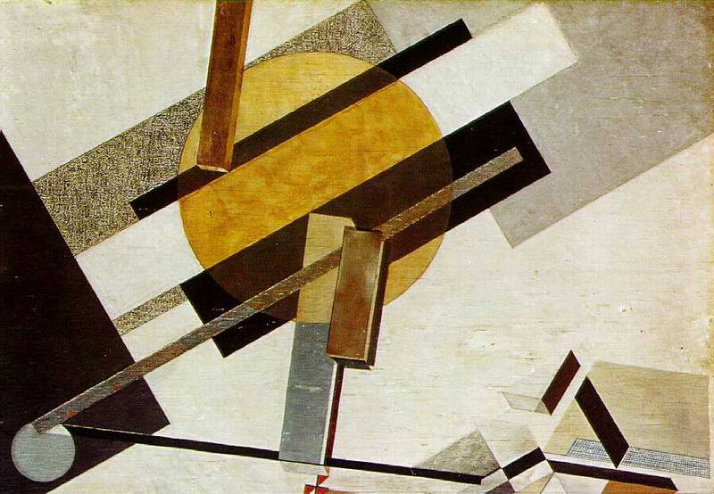
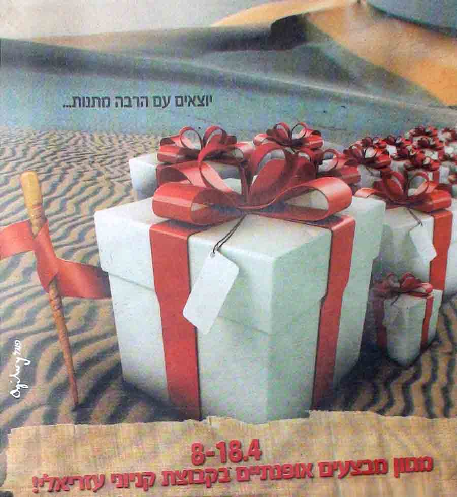
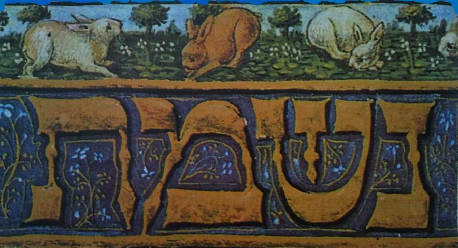
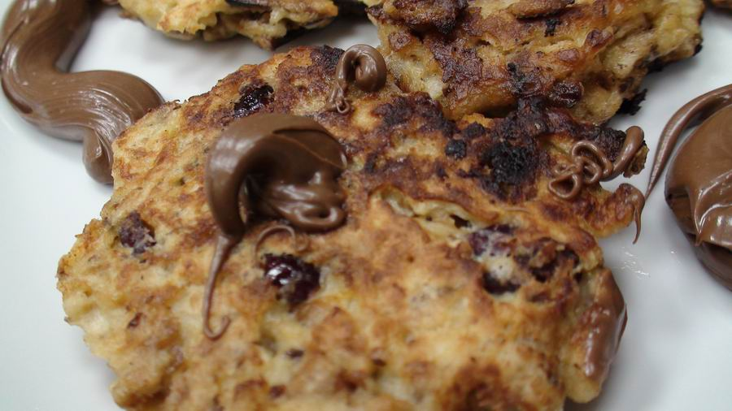
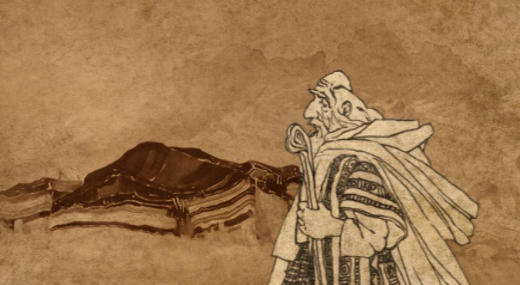
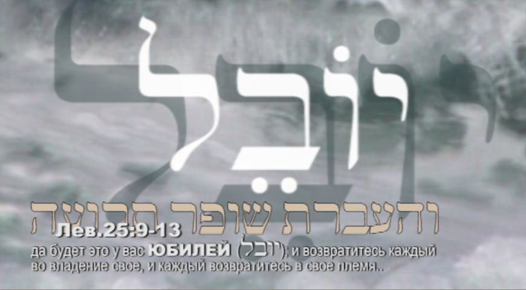
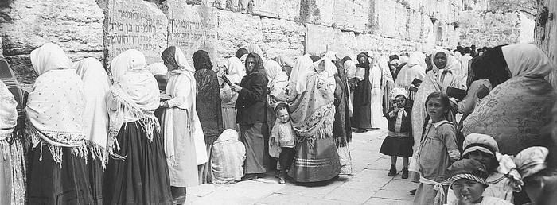
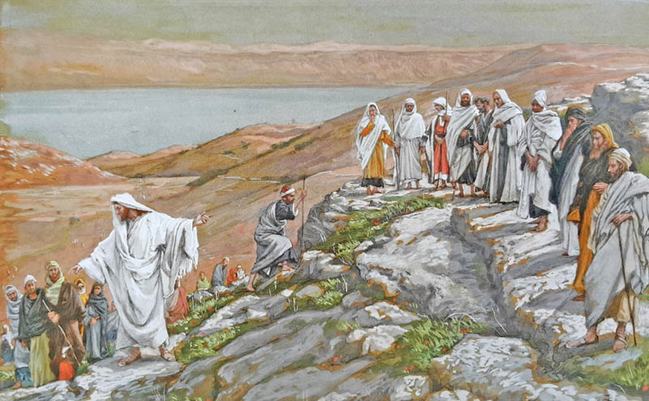
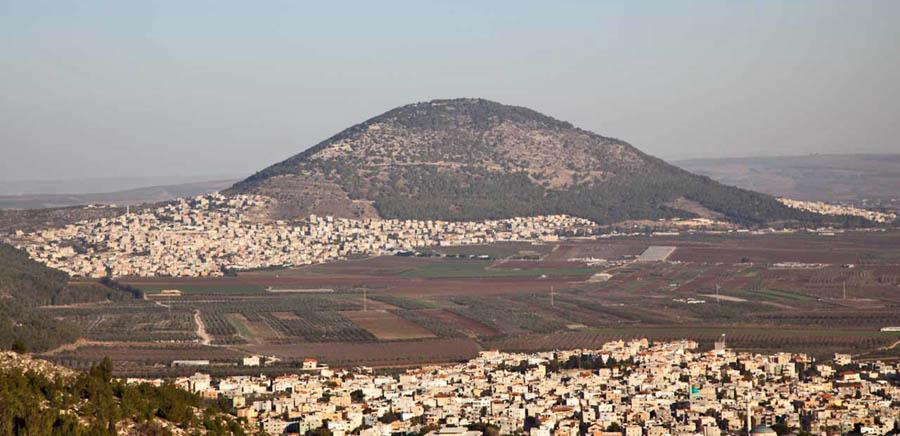

Biblical Feasts
46 articles

The Exodus
 The Exodus Is About Us2018 · Art Midrash, The Bible and the Artist, Biblical Feasts
The Exodus Is About Us2018 · Art Midrash, The Bible and the Artist, Biblical Feasts
God Speaks in the Wilderness2015 · Biblical Feasts Did the Jews Take Egypt with Them in the Exodus?2015 · Biblical Feasts, Artifacts
Did the Jews Take Egypt with Them in the Exodus?2015 · Biblical Feasts, Artifacts The Exodus from Egypt as Seen by James Tissot2015 · Galleries, The Bible and the Artist, Biblical Feasts
The Exodus from Egypt as Seen by James Tissot2015 · Galleries, The Bible and the Artist, Biblical Feasts
The Haggadah
 Contemporary Artists Interpret the Passover Haggadah2015 · Galleries, Art Midrash, The Bible and the Artist, Biblical Feasts
Contemporary Artists Interpret the Passover Haggadah2015 · Galleries, Art Midrash, The Bible and the Artist, Biblical Feasts The Passover Haggadah. A Historical Note2015 · Artifacts, The Bible and the Artist, Biblical Feasts
The Passover Haggadah. A Historical Note2015 · Artifacts, The Bible and the Artist, Biblical Feasts
Pesach in Israeli Advertising2014 · Artifacts, Biblical Feasts
Matzah
 Pesach: What Did Our Fathers Bake Matzah From in the Wilderness?2014 · Biblical Feasts
Pesach: What Did Our Fathers Bake Matzah From in the Wilderness?2014 · Biblical Feasts
Unleavened Bread That Came Down from Heaven2014 · Biblical Feasts Matzah, the Unleavened Bread: How to Make Matzah (Recipe and Video)2014 · Biblical Feasts
Matzah, the Unleavened Bread: How to Make Matzah (Recipe and Video)2014 · Biblical Feasts
Pesach: Matzah Dishes by Misha Rubin2014 · Biblical Feasts
- Shavuot. The Feast of the Gift of Freedom2018 · Biblical Feasts, Art Midrash
- The Ten Commandments (Anochi). Prayerful Chant2018 · Israel and the Church, Biblical Feasts
 The Voice of Shofar. The Film2018 · Biblical Feasts
The Voice of Shofar. The Film2018 · Biblical Feasts The Voice of the Shofar, Part 3. Sinai: a Remembrance of Blowing2014 · Biblical Feasts, Art Midrash
The Voice of the Shofar, Part 3. Sinai: a Remembrance of Blowing2014 · Biblical Feasts, Art Midrash
The Voice of the Shofar Series
 The Voice of the Shofar, Part 1. A High Calling2014 · Biblical Feasts, Art Midrash
The Voice of the Shofar, Part 1. A High Calling2014 · Biblical Feasts, Art Midrash
The Voice of the Shofar, Part 2. Keren: the Calling2014 · Biblical Feasts, Art Midrash- The Voice of the Shofar, Part 3. Sinai: a Remembrance of Blowing2014 · Biblical Feasts, Art Midrash

The Voice of the Shofar, Part 4. Yovel: the Jubilee2014 · Biblical Feasts, Art Midrash The Voice of the Shofar, Part 5. Israel, a Shofar in the Hands of the Creator2014 · Biblical Feasts, Art Midrash
The Voice of the Shofar, Part 5. Israel, a Shofar in the Hands of the Creator2014 · Biblical Feasts, Art Midrash
Sounds of the Shofar
 Sounds of the Shofar. Awe and Prophecy2015 · Biblical Feasts, Art Midrash
Sounds of the Shofar. Awe and Prophecy2015 · Biblical Feasts, Art Midrash Sounds of the Shofar. Shevarim. Yom Kippur2016 · Biblical Feasts, Art Midrash
Sounds of the Shofar. Shevarim. Yom Kippur2016 · Biblical Feasts, Art Midrash- The Shofar: One of a Kind!2015 · Biblical Feasts, Art Midrash
The Commandment of Blowing
 Obeying the Commandment of Shofar Blowing2015 · Biblical Feasts
Obeying the Commandment of Shofar Blowing2015 · Biblical Feasts When the Shofar Sounds, Listen!2015 · Biblical Feasts
When the Shofar Sounds, Listen!2015 · Biblical Feasts
May a Woman Blow the Shofar?2014 · Biblical Feasts Shofar or Trumpet? Let's Check2015 · The Language of the Bible, Biblical Feasts
Shofar or Trumpet? Let's Check2015 · The Language of the Bible, Biblical Feasts
Films and Videos
- The Voice of Shofar. The Film2018 · Biblical Feasts
 Hearing the Voice of the Shofar: the Film "Shofar Experience"2015 · Biblical Feasts
Hearing the Voice of the Shofar: the Film "Shofar Experience"2015 · Biblical Feasts- Videos on the Shofar (Rosh Hashanah)2014 · Biblical Feasts
Ministry

- The Sukkah and the Wild Olive. Building a Sukkah as Written2015 · Biblical Feasts, Israel and the Church
 The Feast of Sukkot. The Deller Family's Dream2015 · Biblical Feasts, Art Midrash
The Feast of Sukkot. The Deller Family's Dream2015 · Biblical Feasts, Art Midrash Daniel Libeskind's Sukkah. The Feast of Sukkot2015 · Artifacts, Biblical Feasts, Art Midrash, Travels
Daniel Libeskind's Sukkah. The Feast of Sukkot2015 · Artifacts, Biblical Feasts, Art Midrash, Travels
Sukkot. Jewish Feasts in the Gospels2015 · Biblical Feasts
The Transfiguration. Jewish Feasts in the Gospels2015 · Biblical Feasts Going Up to Yerushalayim2017 · Biblical Feasts, Travels, Galleries
Going Up to Yerushalayim2017 · Biblical Feasts, Travels, Galleries


- The Transfiguration. Jewish Feasts in the Gospels2015 · Biblical Feasts
- Sukkot. Jewish Feasts in the Gospels2015 · Biblical Feasts
- Pesach: What Did Our Fathers Bake Matzah From in the Wilderness?2014 · Biblical Feasts
- The Voice of the Shofar, Part 4. Yovel: the Jubilee2014 · Biblical Feasts, Art Midrash
- The Voice of Shofar. The Film2018 · Biblical Feasts
- Hearing the Voice of the Shofar: the Film "Shofar Experience"2015 · Biblical Feasts
- Videos on the Shofar (Rosh Hashanah)2014 · Biblical Feasts
 Yom Kippur prayer. New music interpretation2015 · Biblical Feasts
Yom Kippur prayer. New music interpretation2015 · Biblical Feasts- The Ten Commandments (Anochi). Prayerful Chant2018 · Israel and the Church, Biblical Feasts
- The Feast. Creating Through Memory2018 · Biblical Feasts
- The Power of Joy. Rejoice Always!2018 · Biblical Feasts
- Contemporary Artists Interpret the Passover Haggadah2015 · Galleries, Art Midrash, The Bible and the Artist, Biblical Feasts
- The Exodus from Egypt as Seen by James Tissot2015 · Galleries, The Bible and the Artist, Biblical Feasts
- The Exodus Is About Us2018 · Art Midrash, The Bible and the Artist, Biblical Feasts
- The Feast of Sukkot. The Deller Family's Dream2015 · Biblical Feasts, Art Midrash
- Daniel Libeskind's Sukkah. The Feast of Sukkot2015 · Artifacts, Biblical Feasts, Art Midrash, Travels
- Purim-shpil. Exposing Evil…2015 · The Bible and the Artist, Biblical Feasts
- Pesach in Israeli Advertising2014 · Artifacts, Biblical Feasts